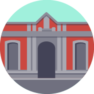

<section class="intro">
  <div class="container">
    <div class="row">
      <div class="col-sm-5 col-md-5">
        <h1 class="brand">Con Datos</h1>
      </div>	
      <div class="col-sm-7 col-md-7">
        <div class="row">
          <div class="col-sm-6 col-md-5" style="font: Quicksand">
            <p>II Conferencia Regional de Datos Abiertos en América Latina y el Caribe</p>						<p class="date">OCT 1—2 | 2014 <span>Ciudad de México</span></p>

          </div>
          <div class="col-sm-6 col-md-5" style="font: Quicksand">
            <p class="right"></span>
          <a href="http://abrelatam.org/" target="_blank"></a></p>
          </div>
        </div>
        <div class="row">
          <div class="col-sm-7 col-md-6">
          </div>
          <div class="col-sm-5 col-md-6">

          </div>
        </div>
      </div>
    </div>
    <div class="row">
      <div class="col-md-12 bkgd">
      </div>
    </div>
  </div>
</section>
<a name="acercade"></a>
<!-- section expertos-->
<section class="expertos">
  <div class="container">
    <div class="row">
      <div class="col-sm-4 bkgd">
      </div>
      <div class="col-sm-8">
        <p>ConDatos es el evento regional más importante sobre datos abiertos en América Latina y el Caribe. </p>
        <p>Expertos de academia, gobierno, empresas y organizaciones de sociedad civil podrán interactuar en pláticas, mesas redondas y 
        talleres que enriquezcan el debate en torno a los datos abiertos.</p>
        <p><a href="../acerca.html">Leer más</a></p>
      </div>

    </div>
  </div>
</section>
<a name="programa"></a>


<!-- section programas-->
<section class="programas">
    <a name="programa"></a>
  <div class="container">
    <div class="row">
      <div class="col-md-12">
        <h2>Programa </h2><br>
        <div class="row">

        </div>

        <div class="row">
          <div class="col-sm-8 col-md-4 col-sm-offset-2 col-md-offset-4">
            <h3>SEPT 30</h3><a href="http://www.abrelatam.org/"><h4>AbreLATAM</h4></a></p>
          </div>
        </div>
        <div class="row">
          <div class="col-sm-8 col-md-4 col-sm-offset-2 col-md-offset-4">
            <h3>OCT 1—2</h3><h4>ConDatos</h4></p>
          </div>
        </div>
      </div>
    </div>


    <table class="table table-hover">
      <thead>
        <td width= "20%"><h4>Hora</h4></td>
        <td width= "40%"><h4>OCT 1</h4></td> 
        <td width= "40%"><h4>OCT 2</h4></td>

      </thead>
    </tr>
    <tr>
      <td>08:00</td>
      <td colspan="2">Bienvenida</td> 
    </tr>
    <tr>
      <td>09:00</td>
      <td rowspan="2">Inauguración</td> 
      <td><a class="btn-condatos btn btn-default btn-s" href="../agenda/es-2-900-Plenarias.html">Datos Abiertos Desde lo Global</a></td>

    </tr>
    <tr>
      <td>09:30</td>
      <td><a class="btn-condatos btn btn-default btn-s" href="../agenda/es-2-930-Plenarias.html">De la transparencia a los Datos Abiertos</a></td> 

    </tr>
    <tr>
      <td>10:00</td>
      <td><a class="btn-condatos btn btn-default btn-s" href="../agenda/es-1-1000-Plenarias.html">Abriendo América Latina y el Caribe: Los medios como palanca de cambio</a></td> 
      <td><a class="btn-herramientas btn btn-default btn-s" href="../agenda/es-2-1000-herramientas.html">Presupuesto abierto</a>
        <a class="btn-innovacion btn btn-default btn-s" href="../agenda/es-2-1000-innovacion.html">El Internet de las cosas</a>
        <a class="btn-politicas btn btn-default btn-s" href="../agenda/es-2-1000-politicas.html">Las Políticas de Gobierno Abierto</a>
      </td> 
    </tr>
    <tr>
      <td>10:30</td>
      <td>
        <a class="btn-condatos btn btn-default btn-s" href="../agenda/es-1-1030-Plenarias.html">Abriendo Ciudades: Ciudades abiertas v.s. Ciudades inteligentes</a>
      </td> 
    </tr>
    <tr>
      <td>11:00</td>
      <td><a class="btn-politicas btn btn-default btn-s" href="../agenda/es-1-1100-politicas.html">Datos Abiertos para el Desarrollo de América Latina</a>
        <a class="btn-innovacion btn btn-default btn-s" href="../agenda/es-1-1100-innovacion.html">Productividad y Datos Abiertos</a>
        <a class="btn-herramientas btn btn-default btn-s" href="../agenda/es-1-1100-herramientas.html">Plataformas de Datos Abiertos</a>
      </td>
      <td><a class="btn-politicas btn btn-default btn-s" href="../agenda/es-2-1100-politicas.html">Construyendo Principios Internacionales: Datos Abiertos en G20</a>
        <a class="btn-innovacion btn btn-default btn-s" href="../agenda/es-2-1100-innovacion.html">Turismo abierto</a>
        <a class="btn-herramientas btn btn-default btn-s" href="../agenda/es-2-1100-herramientas.html">Licencias de uso</a>
      </td> 

    </tr>
    <tr>
      <td>12:00</td>
      <td><a class="btn-politicas btn btn-default btn-s" href="../agenda/es-1-1200-politicas.html">Retos y oportunidades de la Alianza por el Gobierno Abierto</a>
        <a class="btn-innovacion btn btn-default btn-s" href="../agenda/es-1-1200-innovacion.html">Datos Abiertos para la Salud</a>
        <a class="btn-herramientas btn btn-default btn-s" href="../agenda/es-1-1200-herramientas.html">Privacidad frente a la apertura</a></td> 
      <td><a class="btn-politicas btn btn-default btn-s" href="../agenda/es-2-1200-politicas.html">Datos abiertos como ingrediente de una política de gobierno abierto</a>
        <a class="btn-innovacion btn btn-default btn-s" href="../agenda/es-2-1200-innovacion.html">Datos Abiertos para Servicios Públicos</a>
        <a class="btn-herramientas btn btn-default btn-s" href="../agenda/es-2-1200-herramientas.html">Abriendo datos desde la Ciudadanía</a>
      </td> 
    </tr>
    <tr>
      <td>13:00</td>
      <td><a class="btn-politicas btn btn-default btn-s" href="../agenda/es-1-1300-politicas.html">Apoyo multilateral para la apertura</a>
        <a class="btn-innovacion btn btn-default btn-s" href="../agenda/es-1-1300-innovacion.html">Retos Públicos: abriendo el gasto público</a>
        <a class="btn-herramientas btn btn-default btn-s" href="../agenda/es-1-1300-herramientas.html">Mapeo Abierto</a></td> 				 
      <td><a class="btn-herramientas btn btn-default btn-s" href="../agenda/es-2-1300-herramientas.html">Evaluación de políticas de datos abiertos</a>
        <a class="btn-innovacion btn btn-default btn-s" href="../agenda/es-2-1300-innovacion.html">Entendiendo la Gentrificación</a>
        <a class="btn-politicas btn btn-default btn-s" href="../agenda/es-2-1300-politicas.html">Codeando para el Caribe</a>
      </td> 
    </tr>
    <tr>
      <td>14:00</td>
      <td colspan="2">Comida</td> 
    </tr>
    <tr>
      <td>15:00</td>
      <td><a class="btn-condatos btn btn-default btn-s" href="../agenda/es-1-1500-politicas.html">El Futuro con datos: Pláticas Relámpago</a></td> 		
      <td><a class="btn-herramientas btn btn-default btn-s" href="../agenda/es-2-1500-herramientas.html">Herramienta para construir planes de acción de datos abiertos (ODRA)</a>
        <a class="btn-innovacion btn btn-default btn-s" href="../agenda/es-2-1500-innovacion.html">Desastres Naturales</a>
        <a class="btn-politicas btn btn-default btn-s" href="../agenda/es-2-1500-politicas.html">Revolución de datos para Post-2015</a>
      </td> 
    </tr>
    <tr>
      <td>16:00</td>
      <td><a class="btn-politicas btn btn-default btn-s" href="../agenda/es-1-1600-politicas.html
          ">Parlamento Abierto</a>
        <a class="btn-innovacion btn btn-default btn-s" href="../agenda/es-1-1600-innovacion.html
          ">Datos y movilidad sustentable</a>
        <a class="btn-herramientas btn btn-default btn-s" href="../agenda/es-1-1600-herramientas.html
          ">Contrataciones Abiertas<br> y la estandarización de datos en las compras públicas</a></td> 				 
      <td><a class="btn-politicas btn btn-default btn-s" href="../agenda/es-2-1600-politicas.html">Convergencias y divergencias entre datos abiertos y acceso a la información pública</a>
        <a class="btn-innovacion btn btn-default btn-s" href="../agenda/es-2-1600-innovacion.html">Code for All: Innovación desde la Ciudadanía</a>
        <a class="btn-herramientas btn btn-default btn-s" href="../agenda/es-2-1600-herramientas.html">Ciencia de datos</a>
      </td> 		<tr>
        <td>17:00</td>
        <td><a class="btn-politicas btn btn-default btn-s" href="../agenda/es-1-1700-politicas.html">Iniciativas Sostenibles</a>
          <a class="btn-innovacion btn btn-default btn-s" href="../agenda/es-1-1700-innovacion.html">Periodismo de Datos</a>
          <a class="btn-herramientas btn btn-default btn-s" href="../agenda/es-1-1700-herramientas.html">Gobierno Abierto para Cualquier Gobierno</a>
        </td> 				 
        <td><a class="btn-politicas btn btn-default btn-s" href="../agenda/es-2-1700-politicas.html">Acceso Abierto</a>
          <a class="btn-innovacion btn btn-default btn-s" href="../agenda/es-2-1700-innovacion.html">¿Dónde están los 3 billones?</a>
          <a class="btn-herramientas btn btn-default btn-s" href="../agenda/es-2-1700-herramientas.html">Datos Abiertos para el desarrollo local</a>
      </td> 				</tr>
      <tr>
        <td>18:00</td>
        <td><a class="btn-politicas btn btn-default btn-s" href="../agenda/es-1-1800-politicas.html">Ciudades Abiertas</a>
          <a class="btn-innovacion btn btn-default btn-s" href="../agenda/es-1-1800-innovacion.html">Rendición de Cuentas</a>
          <a class="btn-herramientas btn btn-default btn-s" href="../agenda/es-1-1800-herramientas.html">Tecnologías para el cambio social</a></td> 
        <td>
          <a class="btn-politicas btn btn-default btn-s" href="../agenda/es-2-1800-politicas.html">Datos Abiertos para el Desarrollo de América Latina</a>
        </td>
      </tr>
      <tr>
  
    </tr>
  </table>

  <div class="row">
    <div class="col-sm-8 col-md-4 col-sm-offset-2 col-md-offset-4">
      <p><h4>Talleres y Eventos paralelos</h4></p>
    </div>

    <table class="table table-hover">
      <thead>
        <td width= "50%"><h4>OCT 1</h4></td> 
        <td width= "50%"><h4>OCT 2</h4></td>

      </thead>
      <tr>
        <td>
          <a class="btn-taller btn btn-default btn-s" href="../agenda/es-1-talleres-gobabierto.html">Plan de Gobierno Abierto</a>
          <a class="btn-taller btn btn-default btn-s" href="../agenda/es-1-talleres-politica.html">Haciendo Política Pública</a>
          <a class="btn-taller btn btn-default btn-s" href="../agenda/es-1-talleres-odi.html">ODI | Open Data 101</a>
          <a class="btn-taller btn btn-default btn-s" href="../lab.html">LabConDatos</a>

        </td> 
        <td>
          <a class="btn-taller btn btn-default btn-s" href="../mapa.html">ConMapas</a>
          <a class="btn-taller btn btn-default btn-s" href="../agenda/es-2-talleres-vivalahack.html">¡Viva la Hack!</a>
          <a class="btn-taller btn btn-default btn-s" href="../agenda/es-2-talleres-agendacolaborativa.html">Agenda Colaborativa</a>
        </td>
      </tr>

    </table>


    <div class="row">
      <div class="col-sm-8 col-md-4 col-sm-offset-2 col-md-offset-4">
        <h3>OCT 3</h3><h4>Ceremonia de clausura de la Semana de la Estrategia Digital Nacional</h4></p>
      </div>
    </div>
  </div>
</section>


        </div>


            </div>
          </div>


  </div>
</section>

<!-- section paralelos-->
<section class="paralelos">
    <a name="eventos-paralelos"></a>
  <div class="container">
    <div class="row">	
      <h2>Eventos Paralelos</h2>
      <p>
        <a href="../mapa.html">
            
          ConMapas 
        </a>

      <a href="../lab.html">
             LabConDatos
        </a>
      </p>
    </div>
  </div>
</section>


<!-- section sedes-->
<section class="sedes">
  <div class="container">
    <div class="row">	
      <h2>Sedes</h2>
      <p>
        <a href="http://www.bibliotecademexico.gob.mx/">
            
            <span>OCT 1 </span>Biblioteca de México<span>&nbsp;</span>
            <span>Plaza de la Ciudadela No.4, Col. Centro, México D.F., C.P. 06040</span><span>&nbsp;</span>
        </a>

        <a  href="http://www.centroculturadigital.mx/">
            
            <span>OCT 2</span>Centro de Cultura Digital<span>&nbsp;</span>
            <span>Paseo de Reforma s/n Esquina Lieja, Col. Juárez, México D.F., C.P. 06600</span>
        </a>
      </p>
    </div>
  </div>
</section>


<!-- section asiste-->
<section class="asiste">
  <div class="container">
    <h2>Asiste a ConDatos</h2>
    <div class="row">
      <div class="col-sm-4 col-sm-offset-4">
        <p class="lead">Asegura tu lugar en la conferencia y sus eventos paralelos. La entrada es gratuita.</p>
      </div>
    </div>	
    <a href="https://docs.google.com/a/vectores.in/forms/d/1MoBsv3PLaFzNTqkdcyNiwJlrY4fOUu5N2-F_wSYz71Y/viewform" target="_blank">REGÍSTRATE AQUÍ</a>

  </div>
</section>


<!-- section aliados-->
<section class="aliados">
  <div class="container">
    <div class="row">
      <h2>ALIADOS</h2>
      <div class="col-sm-10 col-sm-offset-1 ">
        <ul class="row">
<li><a class="presidencia" href="http://www.presidencia.gob.mx/">Presidencia de la República</a></li>
<li><a class="socialtic" href="http://socialtic.org/">SocialTic</a></li>
        </ul>
                <ul class="row">
<li><a class="ilda" href="http://idatosabiertos.org/">ILDA</a></li>
        </ul>

        <ul class="row">
<li><a class="avina" href="http://www.avinaamericas.org/">AVINA AMERICAS</a></li>
<li><a class="usaid" href="http://www.usaid.gov">USAID</a></li>
<li><a class="idrc" href="http://www.idrc.ca/EN/Pages/default.aspx">IDRC</a></li>
        </ul>

        <ul class="row">
<li><a class="logosfooter" href="https://www.kionetworks.com/en/" target="_blank"></a></li>
<li><a class="wbg" href="http://www.worldbank.org">World Bank Group</a></li>
<li><a class="bid" href="http://www.iadb.org/es/banco-interamericano-de-desarrollo,2837.html">BID</a></li>
                 </ul>

                <ul class="row">
<li><a class="logosfooter" href="http://www.opensocietyfoundations.org/" target="_blank"></a></li>
<li><a class="logosfooter" href="http://www.cepal.org/" target="_blank"></a></li>

<li><a class="logosfooter" href="https://okfn.org/" target="_blank"></a></li>


                 </ul>


                 <ul class="row">
<li>
<a class="logosfooter" href="http://www.oas.org/es/" target="_blank">
  	
</a>
</li>
<li>
<a class="logosfooter" href="https://www.google.com/" target="_blank">
  <br>
</a>
</li>
<li>                            
<a class="logosfooter" href="https://www.hivos.org/" target="_blank">
  
</a>
</li>
        </ul>
      </div>

    </div>
  </div>
</section>
